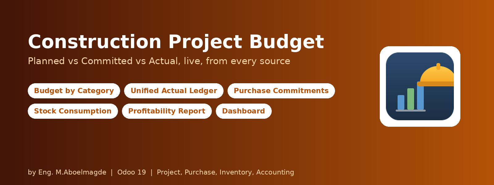
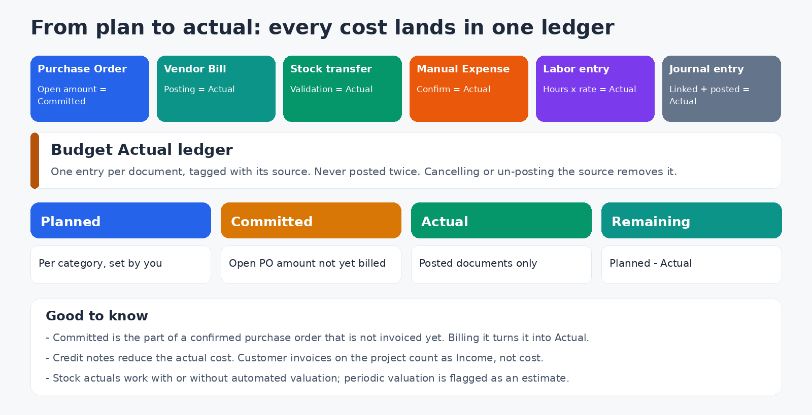
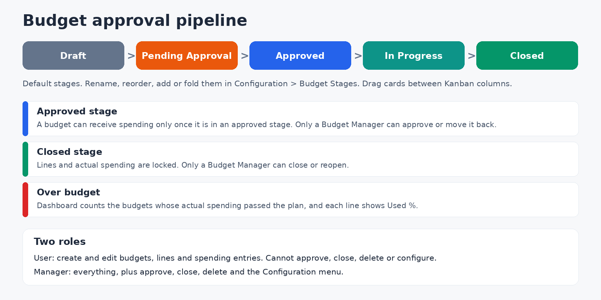
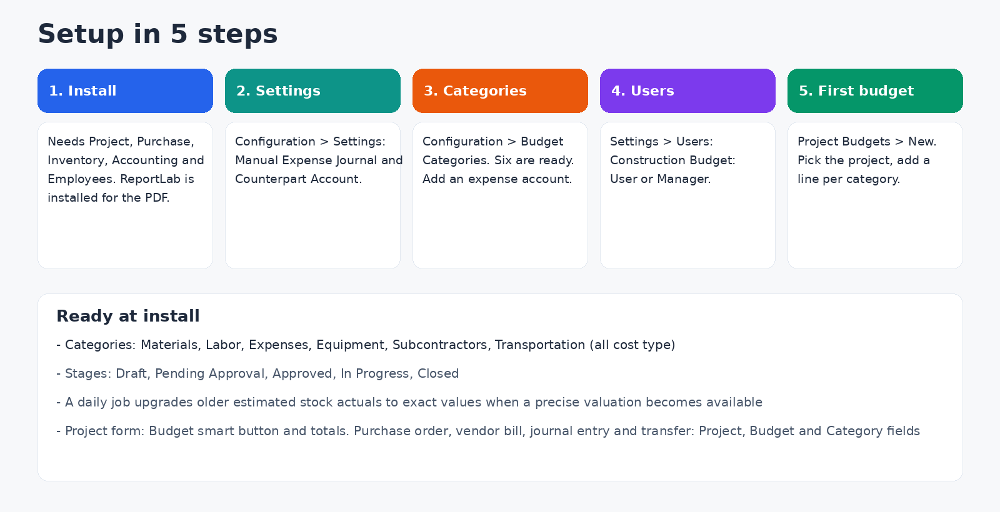

Know where every project stands before the money is gone
Contractors usually discover a budget overrun when the bills arrive. This module gives each project a budget by category (materials, labor, equipment, subcontractors and more) and follows Planned, Committed, Actual and Remaining in real time. Actual cost is not limited to vendor bills: purchase orders, stock consumption, labor, manual expenses and journal entries all feed one ledger, with a one-click link back to the source document.
How the numbers are built

- Planned: an amount per category on the budget lines.
- Committed: the part of a confirmed purchase order, linked to a project, budget and category, that is not invoiced yet. Posting the vendor bill turns it into Actual.
- Actual: a unified Budget Actual ledger. Sources are tracked (vendor bill, customer invoice, journal entry, stock consumption, labor entry, manual expense) and each automated source is tagged so the same document can never post twice. Cancelling or un-posting the source removes its entry, and credit notes reduce the cost.
- Stock consumption: validating a transfer linked to a project posts its cost, with or without automated inventory valuation. When only the product cost price is available the entry is flagged as an estimate, and a daily job upgrades it to the exact value once a precise valuation exists.
- Income: customer invoices linked to the project are recorded as income, so each budget shows total income and profit next to spending.
Features
- Project Budgets with Kanban, list and form views, budget lines per category, utilization % per line, smart buttons for transfers, purchase orders, vendor bills, customer invoices, journal entries, manual expenses and labor entries. A Copy Categories wizard reuses the lines of another budget.
- Manual Expenses with a Draft, Confirmed, Cancelled workflow. Confirming posts a journal entry (expense account against a counterpart such as cash or petty cash) and the Budget Actual entry.
- Labor Entries: employee, hours and hourly rate give the total cost, posted to the Labor category the same way. Confirm many entries at once from the list.
- Purchase orders, vendor bills, journal entries and stock transfers get Project, Budget and Category fields. The module checks that the category belongs to the chosen budget. An optional analytic account on the budget is applied to the related lines.
- Project form: a Budget smart button with total, committed, spent, remaining and used %.
- Spending Analysis: pivot and graph by project, category and month.
- Multi-company: every record follows company rules.
Dashboard and Profitability Report
- Dashboard with a project filter and KPI cards: Active Budgets, Total Planned, Committed, Total Spent (with the trend against last month), Total Income, Net Profit and Over Budget. A donut chart shows spending by source, bar charts compare Planned, Committed and Actual by category, and a ranking lists the projects. Budgets in other currencies are converted to the company currency. Light and dark mode.
- Project Profitability Report: an accounting-statement-style screen comparing Planned, Committed, Actual and Variance, either as an overview across all projects or drilled down by category with every posted entry of one project. Print it as a PDF (built with ReportLab, so it does not depend on wkhtmltopdf).
Approval pipeline and control

- The default stages are Draft, Pending Approval, Approved, In Progress and Closed. You can rename, reorder, add and fold stages, and flag which ones count as Approved and which as Closed.
- A budget can receive new spending only once it is in an approved stage. In a closed stage its lines and actual spending are locked.
- Only a Construction Budget Manager can approve a budget, move it out of approval, or close and reopen it.
- Amounts must be positive, and a spending entry must use a category that exists in that project's budget. Entries created automatically from a source document are protected from manual editing.
Configuration guide

Step 1: Install
The module needs the Project, Purchase, Inventory (with stock accounting), Accounting and Employees apps. The PDF report uses the reportlab library: the module tries to install it when you install it, and again the first time you print, if it is missing. If your server has no internet access, run pip install reportlab in the Python environment of Odoo.
Step 2: Accounting defaults
Open Construction Budget > Configuration > Settings and set, for your company, the Manual Expense Journal and the Manual Expense Counterpart Account (cash, petty cash or accrued payroll). They are used for Manual Expense and Labor entries. Each budget can override both.
Step 3: Budget categories
Open Construction Budget > Configuration > Budget Categories. Six cost categories come ready: Materials, Labor, Expenses, Equipment, Subcontractors and Transportation. For each one, choose the Expense Account that manual and labor entries debit (expense accounts only). You can add your own categories, including Income categories, which are kept apart from cost.
Step 4: Stages (optional)
Under Configuration > Budget Stages, adapt the pipeline to your approval process and mark the Approved and Closed stages.
Step 5: Users and roles
In Settings > Users, give each person one Construction Budget role: User or Manager.
| Action | User | Manager |
|---|
| Dashboard, budgets, Spending Analysis, Profitability Report | Yes | Yes |
| Create and edit budgets and budget lines | Yes | Yes |
| Create and confirm Manual Expenses and Labor Entries | Yes | Yes |
| Link purchase orders, bills, journal entries and transfers to a budget | Yes | Yes |
| Move a budget between ordinary stages | Yes | Yes |
| Approve a budget, move it out of approval | No | Yes |
| Close or reopen a budget | No | Yes |
| Delete budgets, expenses and labor entries | No | Yes |
| Configuration menu: categories and stages | No | Yes |
Both roles see the budgets of the companies they are allowed on. A User also gets the standard Project User rights.
Step 6: Your first budget
- Go to Construction Budget > Project Budgets and click New. Pick the project and add a line per category with its planned amount.
- A Manager moves the budget to an approved stage.
- On purchase orders, vendor bills, journal entries and stock transfers of the project, fill the Project, Budget and Category.
- Confirm the purchase order to see the Committed amount, then post the bill to see it become Actual.
- Open the Dashboard and the Project Profitability Report.
Technical details
- Odoo 19.0, Community and Enterprise. Depends on project, purchase, stock, stock_account, account and hr. Python library: reportlab.
- License: Odoo Proprietary License v1.0 (OPL-1).
- The dashboard and report are OWL components. Automated tests for stock actuals are included, and upgrade scripts for earlier versions.
Frequently asked questions
Why can't I add spending to my budget? It is still in a stage that is not marked Approved, or it is in a Closed stage.
Why is a category refused on a bill? The category must be one of the lines of the selected budget, and a budget must be chosen before the category.
A stock actual is marked as an estimate. No exact valuation was available when the transfer was validated, so the product cost price was used. It is upgraded automatically when a precise valuation appears.
The PDF report does not print. Check that reportlab is installed on the server.
Support
Bug-fix updates are included. Installation, configuration and customization support: Eng. M.Aboelmagde (YouTube: Odoo Lab, @odoolab).